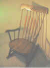
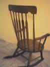
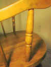
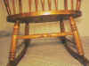
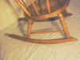
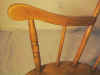
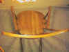
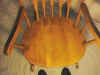

Ricks College
Division of Engineering and Technology
Department of Computer Aided Engineering Technologies
DT 213
Lab #1 - Rocking Chair
Favor with God gives necessary incentive and perspective to life. It gives man real purpose for living and achieving.
@, Ezra Taft Benson.Using 3D Studio Max construct a 3-dimensional model of the rocking chair shown in the attached photos and described below:
1. The following command/modifiers will be useful in the creation of this chair: Extrude, Bend, Taper, Lathe
2. Approximate sizes as closely as possible so that proportions are accurate.
3. Include the same level as detail as shown in the drawings (note detail on spindles, etc.), where possible.
4. Choose a material for the chair which shows the wood grain. Take care in mapping the material to the object so the wood grain is aligned properly.
5. Place the entire finished chair inside a room (floor and 2 walls) Use materials of your choice for the room, but remember they should not detract from the rocking chair.
6. Include appropriate omni and spotlights. Include shadows in your rendering to increase depth and realism.
7. Turn in an electronic version of the rendering as discussed in class.
Be sure to save the 3D Studio Max model for later use in class.
Photographs: Click on desired photo to enlarge
 |
|
 |
|
 |
|
 |
 |
 |
 |
 |